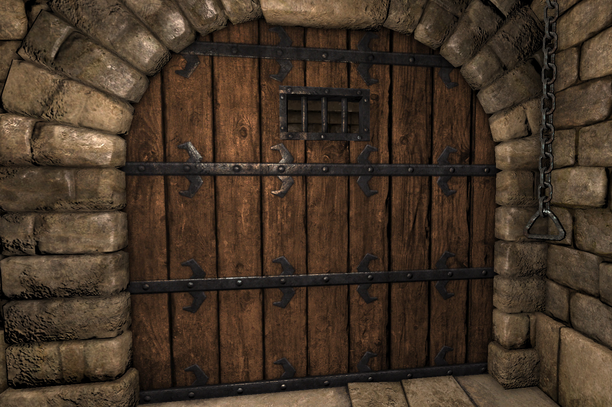

You easily snuck into the evil wizards hide out without being caught. You climb up the stairs of the tallest tower hoping the princess will marry you once you save her. As you reach the top of the stairs you come across a door. Open it.
